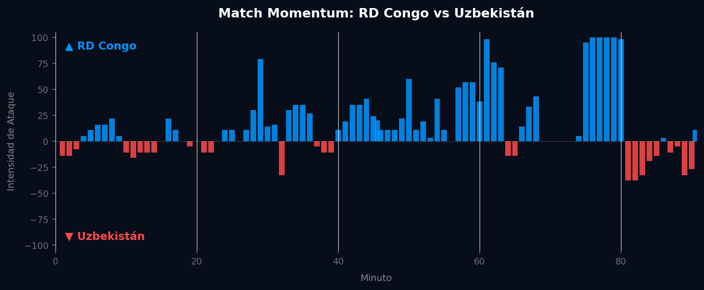

Grupo K
 Uzbekistán
Uzbekistán
RD Congo vs Uzbekistán
📅 2026-06-27 · 🕒 22:00 (Local)
RD Congo

3 - 1
FINALIZADO
Uzbekistán
📅 2026-06-27 · 🕒 22:00 (Local)
Uzbekistán
El encuentro en el Grupo K fue un claro testimonio de la ambición de la RD Congo por avanzar, culminando en una victoria por 3-1 sobre Uzbekistán. Desde el inicio, los Leopardos mostraron una intensidad superior, abriendo el marcador temprano con una jugada bien tejida que explotó las debilidades defensivas uzbekas. Uzbekistán, aunque logró igualar momentáneamente en el segundo tiempo con un destello de calidad individual, nunca pudo contener la ofensiva congoleña. La RD Congo restauró su ventaja con un gol crucial que desmoralizó a sus oponentes y, aprovechando el espacio y la frustración rival, sentenció el partido con un tercer tanto en los minutos finales, consolidando una victoria merecida tanto táctica como emocionalmente.
El análisis del Match Momentum confirma la superioridad de RD Congo, que dominó la intensidad del partido el 58.5% del tiempo. Esta hegemonía se reflejó en su capacidad para generar ocasiones y mantener a Uzbekistán bajo presión constante, alcanzando su intensidad máxima de 100.00 en el minuto 76', coincidiendo con el momento en que aseguraron el tercer gol, rompiendo definitivamente la resistencia rival. Por su parte, Uzbekistán solo logró dominar el 27.7% del partido, con una intensidad de ataque máxima (en contra del local) de 38.00 en el minuto 81', un pico aislado que no representó una amenaza sostenida. El Match Point (Punto Crítico) del encuentro fue el segundo gol de RD Congo en el minuto 62'. Tras el empate momentáneo de Uzbekistán, este gol restauró la ventaja, quebró la moral del equipo rival y permitió a los congoleños gestionar el resto del partido con mayor calma y autoridad, preparándose para el golpe final.

La RD Congo exhibió un planteamiento táctico astuto, capitalizando la velocidad de sus extremos y la contundencia de su delantero centro. Su presión alta en campo rival fue intermitente pero efectiva, forzando errores y recuperando balones en zonas peligrosas. Defensivamente, mostraron solidez en las transiciones, aunque concedieron un gol debido a una falta de comunicación en la zona central. Sus virtudes radicaron en la verticalidad ofensiva y la capacidad de convertir sus oportunidades, manteniendo la calma incluso después del empate rival y reaccionando con la madurez necesaria para asegurar la victoria.
Uzbekistán luchó por encontrar su ritmo, mostrando una defensa vulnerable que fue explotada repetidamente por la RD Congo. Su mediocampo tuvo dificultades para controlar el balón y generar juego ofensivo consistente, lo que limitó significativamente sus oportunidades de ataque. Aunque lograron un gol producto de una acción aislada, su capacidad para desestabilizar la defensa congoleña fue mínima. Las principales fallas fueron una organización defensiva inconsistente y una evidente falta de profundidad en sus opciones de ataque, evidenciando una desconexión entre sus líneas que impidió cualquier intento de remontada.
El duelo táctico fue claramente decantado a favor del estratega de RD Congo, quien supo identificar y explotar las debilidades de Uzbekistán, mientras que el entrenador uzbeko no encontró las soluciones para contrarrestar la dinámica congoleña. La RD Congo demostró una superioridad en la ejecución de su plan de juego, en la intensidad mostrada y en la eficacia frente al arco. El marcador final de 3-1 es un veredicto justo y lógico, reflejo de una diferencia palpable en la calidad individual y, sobre todo, en la coherencia y el acierto del planteamiento táctico de la RD Congo a lo largo de los 90 minutos.